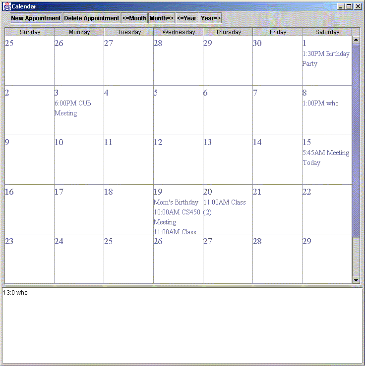
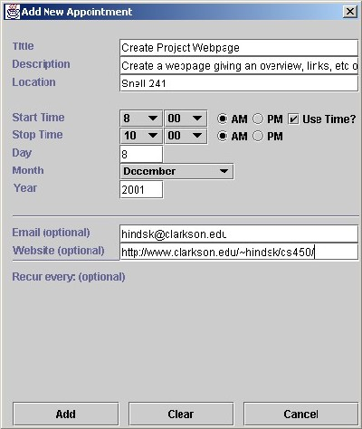

Group contracted with a user to provide an application for his Mac OS X platform having
found supporting applications for OS X to be lacking; The benefits of Java's inherent
Object Oriented code and design patterns and the experience of team members with Java
as opposed to the Mac OS X recommended languages(Cocoa) led to Java being chosen as
the development language for this project.
Application requirements and specifications were:
- Design and develop an Open Source Appointment Calendar Application that runs
in the Mac OS X environment.
- Provide features that are expected of basic Calendar applications, such as
- Ability to schedule any number of events on one or more days. Events
may include a title, description (optional), location (optional),
and time (optional).
- Standard view can show any month, with event times and titles listed in order.
- Clicking on an event will show additional details for that event.
- Users can open the application just like any other application.
- Events can be set to recur automatically. The user can modify an individual occurrence
of the event without affecting all other occurrences.
- (Optional)User can set alarms or reminders for an event. A daemon running in the
background will alert the user when the application is not running.
Top
Links and Downloads
Available Source Code
Documents
Useful Links
-
Java 2 API Specification
-
JavaTM API for XML Processing (JAXP)
-
Date and Calendar class reference
-
Advanced Java 2 Platform How To Program, Deitel et al, Prentice
Hall@2001, Copyright 2000
-
Core Java 2, Volumes I and II, Horstmann & Cornell, Sun Microsystems
Press, Copyright 2000
-
Learning Java, Niemeyer&Knudsen, O'Reilly&Assoc, @2000, Copyright
2002
Top
Screenshots

The Main Application Window

The Event Details DialogBox
|